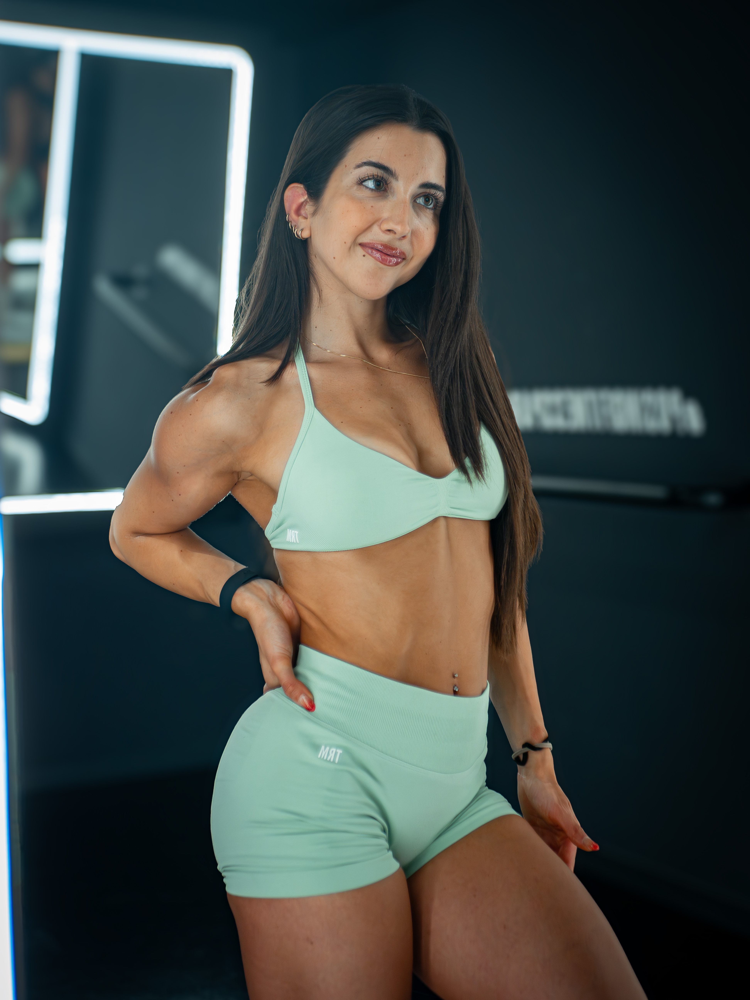

Entrenador personal online y nutrición 1:1 para mujeres.
Reconstruye tu cuerpo.Re·vive tu mejor versión.
Hoy
«Volví a sentirme yo. Más fuerte que nunca.»
Entrenadora personal online: entrenamiento, nutrición y acompañamiento personalizado basado en ciencia para una recomposición corporal real y sostenible.
No es un plan.Es un punto de inflexión.No buscas un cuerpo perfecto.Buscas un cuerpo tuyo.No es disciplina extrema.Es constancia consciente.No estás sola.Estás guiada.
No es un plan.Es un punto de inflexión.No buscas un cuerpo perfecto.Buscas un cuerpo tuyo.No es disciplina extrema.Es constancia consciente.No estás sola.Estás guiada.
Una historia real
Todo proceso empieza con una decisión.
Re·vive no nace de una teoría. Nace de mi propia transformación.
No es solo un cambio físico, es aprender a reconstruirte desde dentro.
Años intentándolo sin conseguir resultados.
Pensaba que la única solución era restringirme.
Ese camino recorrido es ahora el tuyo.
AntesDespués
Desliza para ver la transformación.

Experta en recomposición corporalValeria Cardellini
Fundadora
10+ años entrenando · Asesora certificada en entrenamiento y nutrición
Sobre mí
Soy Valeria. Y hace tiempo, también empecé desde cero.
Pasé años buscando el cuerpo “perfecto” en dietas que me apagaban y entrenamientos que no funcionaban. Llegué a tener una relación poco sana con la comida y el ejercicio, pensando que cambiar significaba restringir y exigir siempre más.
Hasta que entendí algo: no necesitaba ser otra, necesitaba volver a mí.
Estudié, entrené, fallé y volví a empezar. Y entendí que lo que realmente necesitaba no era más disciplina, sino una guía clara, basada en ciencia y adaptada a mí.
Por eso nació RE·VIVE: el método y el acompañamiento que a mí me habría gustado encontrar entonces. Hoy lo comparto con cada mujer que decide reconstruirse conmigo.
01
Personalización real. Tu plan se adapta a ti, no al revés.
02
Acompañamiento humano. Hablamos. Te escucho. Ajustamos.
03
Resultados sostenibles. No es un mes. Es una nueva forma de vivir.
No trabajamos con rutinas genéricas. Como tu entrenadora personal online, construimos un sistema a tu medida que evoluciona contigo y te enseña a crear hábitos que puedas mantener toda la vida.
01
Entrenamiento personal inteligente
Programación de fuerza orientada a recomposición corporal. Enfoque en sobrecarga progresiva, mejora de la técnica, vídeos explicativos y adaptación a tu equipamiento.
Correcciones de vídeo personalizadas
Mejora de técnica, respiración y control
Adaptación completa a tu equipamiento
02
Nutrición sostenible
Sin dietas imposibles. Aprenderás a comer de verdad: con flexibilidad, energía y sin culpa. La clave no está en comer menos, sino en aprender a nutrirte mejor y darle a tu cuerpo lo que realmente necesita.
Macros personalizados adaptados a ti
Educación nutricional aplicada a tu día a día
Ajuste de calorías y macronutrientes según tu actividad
03
Acompañamiento real
No estás sola en este proceso. Te acompaño hasta que consigas tu objetivo. Tendrás contacto directo conmigo, revisiones continuas para ajustar lo necesario y apoyo constante durante todo el proceso.
Seguimiento y ajustes personalizados
Chat directo conmigo y comunidad privada
Acompañamiento y motivación constante
Empieza hoy
Tu cuerpo no necesita un plan genérico. Necesita el tuyo.
Cuéntame dónde estás y hacia dónde quieres ir. Juntas vemos qué tiene más sentido para ti.
La verdad es que estoy muy contenta la verdad 💕, con la dieta y los entrenos. Me encuentro muy motivada y con ganas de seguir, y todo esto gracias a ti 🥰. Mil gracias 🫶🏻
“
Me está encantando esta rutina, me está sorprendiendo este día. No hacía casi ninguno de los que tengo pautados hoy
“
Valeeee 🥰🥰🥰. Muchas gracias llegaste justo cuando mas te necesitaba eh jajajaja ❤️, debería de haber empezado antes contigo cuando me hablaste aquella vez ❤️. Te juro que me arrepiento de no haber comenzado antes ❤️😭😭
“
Holaaa, estoy viendo mis fotos de la primera semana y ahora después del primer mes, estoy flipando jajaja, me he desinflamado muchísimo y hasta me ha mejorado la postura de la espalda 😍😍😍
“
No soy consciente del cambio real hasta que veo la primera foto de cuando empezamos y digo DIOS ❤️. Es muy fuerte en solo 4 meses he conseguido mejorar lo que no había mejorado en 1 año ❤️. Qué feliz! 🥰
“
Hola Vale!! 🥰 Muchas gracias, queda súper claro con los vídeos que me compartiste jeje me encanta eso! En verdad gracias por tomarte el tiempo de verlos! Y el seguimiento que haces, queda súper claro en que podemos mejorar 💪🏼💗
“
Estoy súper motivada y agradecida porq me acompañes
“
Las primeras impresiones muy guay, la rutina me gusta mucho, siento que puedo entrenar mas intensamente sin sentirme fatigada. Muchas gracias por los vídeos, me ha quedado muy claro y me encanta que te impliques tanto 🥺🫶🏻🫶🏻
“
Me gusta muchísimo el entrenamiento y como lo estructuras! Siento que puedo dar mucho más de mí, y no cansarme mentalmente, ya que antes con 4 series sinceramente me daba tanta pereza que no iba motivada y lógicamente no entrenaba con tanta intensidad como ahora. Haciendo 2/3 series lo puedo dar todo en cada una de ellas! estoy 🔥💗
“
No es que eres increíble. La diferencia es brutal. En hacerlo sola a hacerlo con una guía. Yo estoy súper feliz... de verdad gracias...
“
Graciassss... me encanta que estés pendente y me corrijas 🫣😍.
“
Yo también estoy muy contenta, desde el principio me he sentido muy cómoda y te agradezco todo lo que me estás ayudando. Me veo la espalda súper bien nunca había tenido esa forma ni apenas se notaba nunca nada, además en las fotos de esta semana noto un mayor progreso, estoy muy contenta muchísimas gracias por todo!!
“
Me estoy sintiendo bien, la alimentación me resulta fácil de seguir y el entrenamiento también, de media voy tres días per noto la mejora en cada semana
“
Me estoy sintiendo muy bien, mentalmente estoy en paz porque siento que como lo que me gusta, como si no estuviese siguiendo una dieta por obligación. Físicamente también bien, cada día me siento con un poco más de energía y no me veo mal. Físicamente me siento más desinflamada, ya no me duele la barriga como antes, mentalmente el poder comer bien y tan variado me hace estar mejor conmigo misma
“
Para nada, es más ya no picoteo entre comidas y aunque me pongan algo delante que me guste mucho no caigo en la tentación, he aprendido a saber cuando tengo hambre de verdad y cuando es por ansiedad
“
La verdad que mejor que nunca, estoy también aprendiendo a escuchar mucho a mi cuerpo y a no ser tan dura conmigo misma que esto es un proceso largo y lento.
“
Me encanta que en los días que te toca entrenar hay un vídeo por cada ejercicio😍
“
Uf Valeria me encanta la dieta. Me gusta todo, se me adapta todo rápido
“
Y para mi poder entrenar en top por la tarde es el verdadero logro, porque siempre he ido muy anchita por verme hinchada 🥲🥰
“
La verdad es que estoy muy contenta la verdad 💕, con la dieta y los entrenos. Me encuentro muy motivada y con ganas de seguir, y todo esto gracias a ti 🥰. Mil gracias 🫶🏻
“
Me está encantando esta rutina, me está sorprendiendo este día. No hacía casi ninguno de los que tengo pautados hoy
“
Valeeee 🥰🥰🥰. Muchas gracias llegaste justo cuando mas te necesitaba eh jajajaja ❤️, debería de haber empezado antes contigo cuando me hablaste aquella vez ❤️. Te juro que me arrepiento de no haber comenzado antes ❤️😭😭
“
Holaaa, estoy viendo mis fotos de la primera semana y ahora después del primer mes, estoy flipando jajaja, me he desinflamado muchísimo y hasta me ha mejorado la postura de la espalda 😍😍😍
“
No soy consciente del cambio real hasta que veo la primera foto de cuando empezamos y digo DIOS ❤️. Es muy fuerte en solo 4 meses he conseguido mejorar lo que no había mejorado en 1 año ❤️. Qué feliz! 🥰
“
Hola Vale!! 🥰 Muchas gracias, queda súper claro con los vídeos que me compartiste jeje me encanta eso! En verdad gracias por tomarte el tiempo de verlos! Y el seguimiento que haces, queda súper claro en que podemos mejorar 💪🏼💗
“
Estoy súper motivada y agradecida porq me acompañes
“
Las primeras impresiones muy guay, la rutina me gusta mucho, siento que puedo entrenar mas intensamente sin sentirme fatigada. Muchas gracias por los vídeos, me ha quedado muy claro y me encanta que te impliques tanto 🥺🫶🏻🫶🏻
“
Me gusta muchísimo el entrenamiento y como lo estructuras! Siento que puedo dar mucho más de mí, y no cansarme mentalmente, ya que antes con 4 series sinceramente me daba tanta pereza que no iba motivada y lógicamente no entrenaba con tanta intensidad como ahora. Haciendo 2/3 series lo puedo dar todo en cada una de ellas! estoy 🔥💗
“
No es que eres increíble. La diferencia es brutal. En hacerlo sola a hacerlo con una guía. Yo estoy súper feliz... de verdad gracias...
“
Graciassss... me encanta que estés pendente y me corrijas 🫣😍.
“
Yo también estoy muy contenta, desde el principio me he sentido muy cómoda y te agradezco todo lo que me estás ayudando. Me veo la espalda súper bien nunca había tenido esa forma ni apenas se notaba nunca nada, además en las fotos de esta semana noto un mayor progreso, estoy muy contenta muchísimas gracias por todo!!
“
Me estoy sintiendo bien, la alimentación me resulta fácil de seguir y el entrenamiento también, de media voy tres días per noto la mejora en cada semana
“
Me estoy sintiendo muy bien, mentalmente estoy en paz porque siento que como lo que me gusta, como si no estuviese siguiendo una dieta por obligación. Físicamente también bien, cada día me siento con un poco más de energía y no me veo mal. Físicamente me siento más desinflamada, ya no me duele la barriga como antes, mentalmente el poder comer bien y tan variado me hace estar mejor conmigo misma
“
Para nada, es más ya no picoteo entre comidas y aunque me pongan algo delante que me guste mucho no caigo en la tentación, he aprendido a saber cuando tengo hambre de verdad y cuando es por ansiedad
“
La verdad que mejor que nunca, estoy también aprendiendo a escuchar mucho a mi cuerpo y a no ser tan dura conmigo misma que esto es un proceso largo y lento.
“
Me encanta que en los días que te toca entrenar hay un vídeo por cada ejercicio😍
“
Uf Valeria me encanta la dieta. Me gusta todo, se me adapta todo rápido
“
Y para mi poder entrenar en top por la tarde es el verdadero logro, porque siempre he ido muy anchita por verme hinchada 🥲🥰
Preguntas
Preguntas frecuentes sobre entrenador personal
Si no encuentras tu duda aquí, escríbeme directamente — te respondo yo.
Un entrenador personal diseña tu plan de entrenamiento según tus objetivos, adapta los ejercicios a tu nivel y equipamiento, corrige tu técnica y ajusta el plan progresivamente. En Re·vive también incluimos nutrición personalizada.
¿Qué es la regla 3-3-3 para estar en forma?+
La regla 3-3-3 propone entrenar 3 veces por semana, con sesiones de 3 bloques de ejercicios y al menos 3 meses de constancia para ver cambios reales. Es una buena guía de partida, pero en Re·vive siempre la adaptamos: tu punto de partida, tu disponibilidad y tus objetivos mandan más que cualquier regla genérica.
¿Cuál es la diferencia entre un coach y un entrenador personal?+
Un entrenador personal se centra en el entrenamiento físico y la programación de ejercicios. Un coach trabaja más el aspecto mental y de hábitos. En Re·vive combinamos ambos: además del plan físico y nutricional, el acompañamiento incluye trabajo de mentalidad y constancia para que los cambios sean reales y duraderos.
¿Necesito experiencia previa para entrenar con un entrenador personal online?+
Para nada. El plan se construye desde donde estás hoy. Si nunca has tocado una pesa, empezamos por la técnica y la base. Si llevas años entrenando, lo afinamos. Tu entrenadora personal online adapta cada fase a tu nivel real.
¿En cuánto tiempo veré resultados con un entrenador personal online?+
Desde las primeras semanas notarás más energía, mejor descanso y sensaciones positivas. Sin embargo, los cambios profundos requieren tiempo: no se trata solo de estética, sino de transformar tus hábitos y tu salud para lograr resultados que mantengas toda la vida. Por supuesto, el ritmo de estos avances también dependerá de tu nivel de compromiso con el proceso.
¿Por qué elegir una entrenadora personal especializada en mujeres?+
Porque tu cuerpo, tu ciclo hormonal y tu contexto vital son únicos. Trabajar con una entrenadora personal que comprende estas variables evita los planes genéricos y te ayuda a lograr el cambio físico que buscas de la forma más rápida y eficaz, pero, por encima de todo, de la manera más saludable para ti.
Tu próximo capítulo
Empieza hoy. Tu yo de mañana ya lo está esperando.
Cuéntame sobre ti y te respondo en menos de 24h. Sin compromiso — solo una conversación real.
Respuesta en menos de 24h
Sin compromiso
Plazas limitadas cada mes
✓
¡Solicitud enviada!
Te escribiré en menos de 24h. Si no ves mi respuesta, revisa la carpeta de spam.
.JPG)